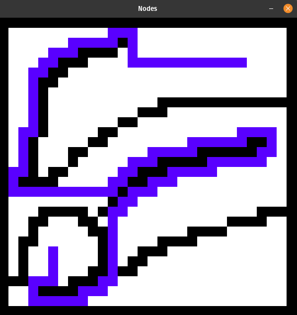
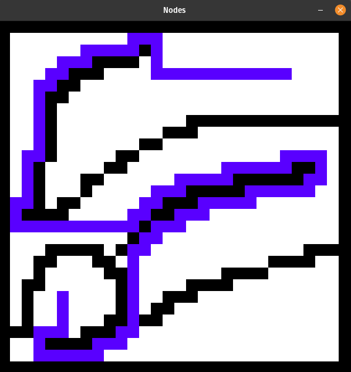

Proyectos
A* Path Finder
Esa una implementacion del algoritmo A* el cual encuentra un camino de largo minimo entre dos puntos. Fue implementado en Python utilizando PyGame.
Estudiante de Ingenieria
Esa una implementacion del algoritmo A* el cual encuentra un camino de largo minimo entre dos puntos. Fue implementado en Python utilizando PyGame.
Realizado en el Instituto Tecnologico Superior, en Montevideo Uruguay.